Unser Team
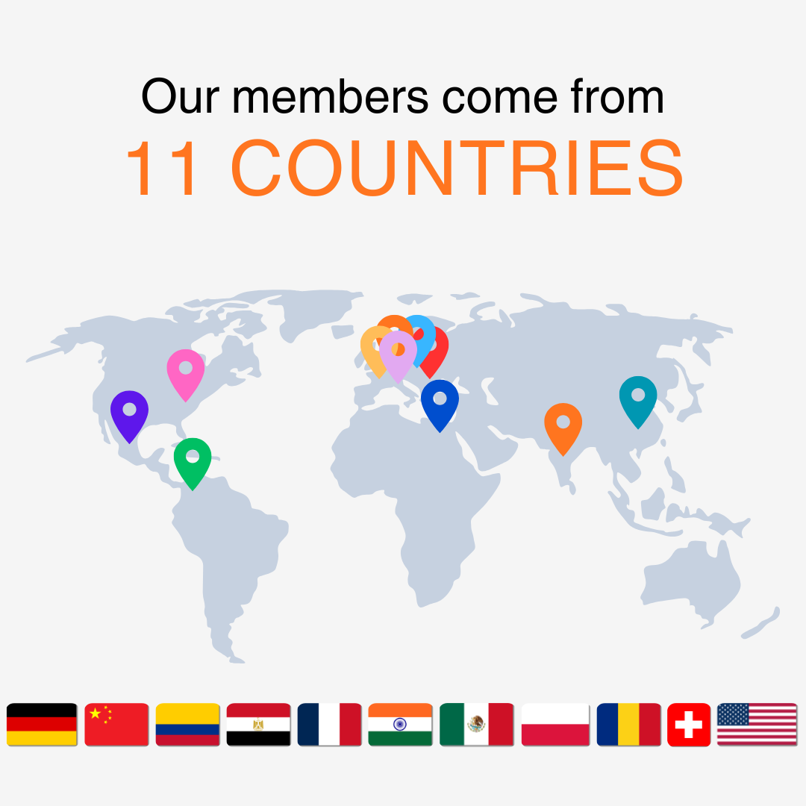
Aktuelle Mitglieder
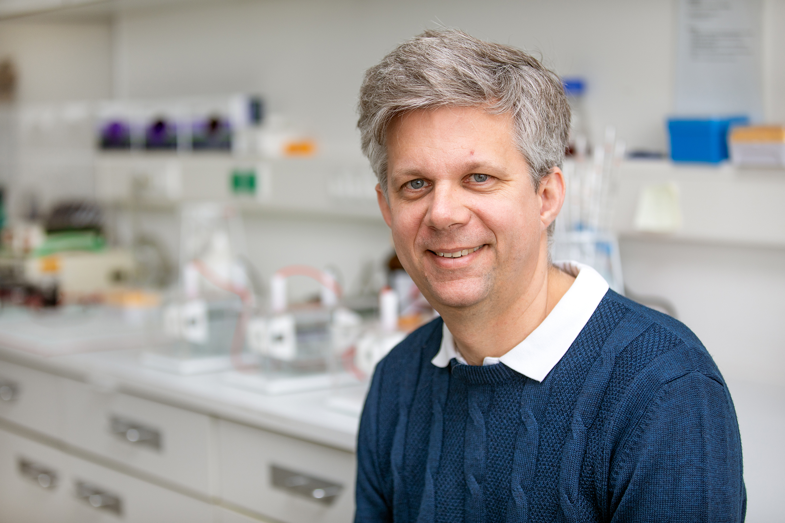
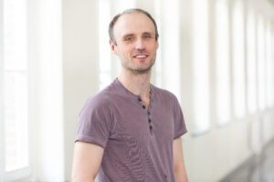
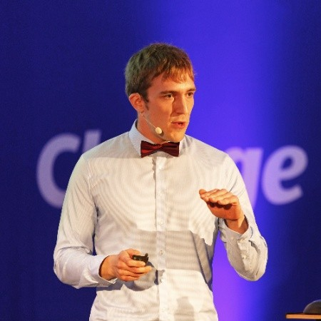
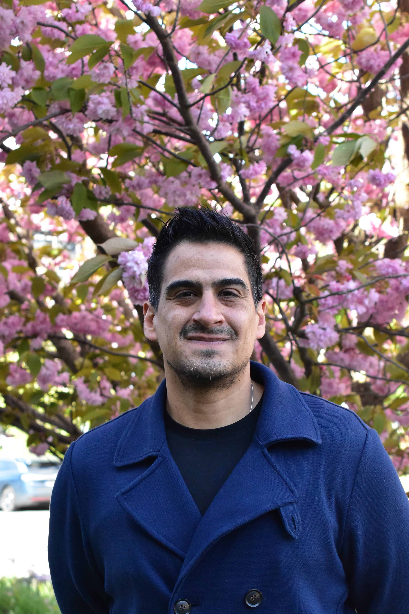
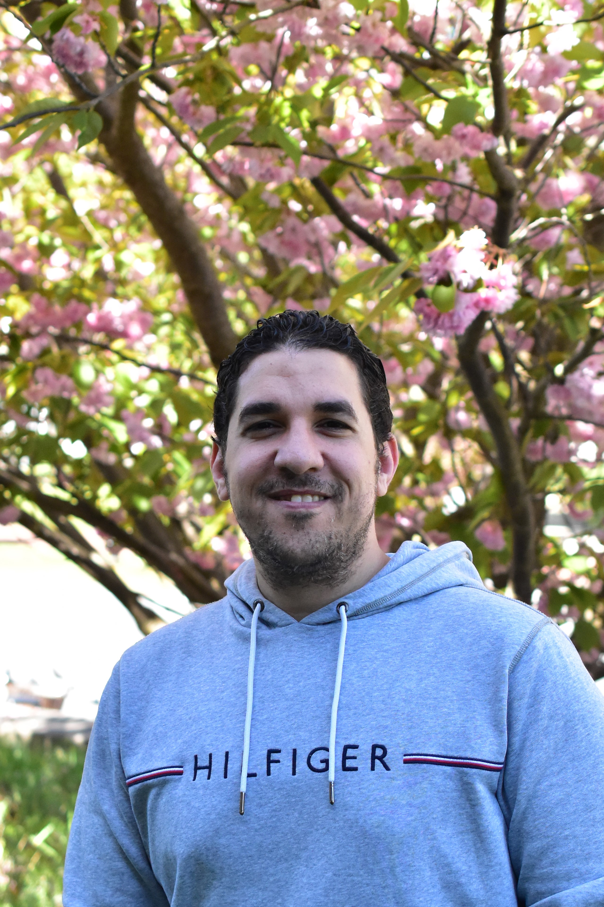
Arnhild Grothey
Technische Assistentin
✉️ E-Mail an Arnhild
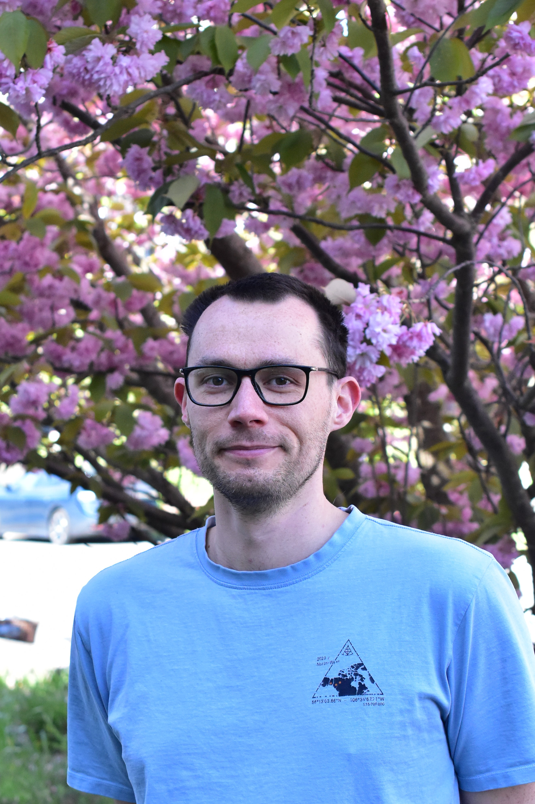
Silvan Grosse-Holz
Technischer Assistent
✉️ E-Mail an Silvan
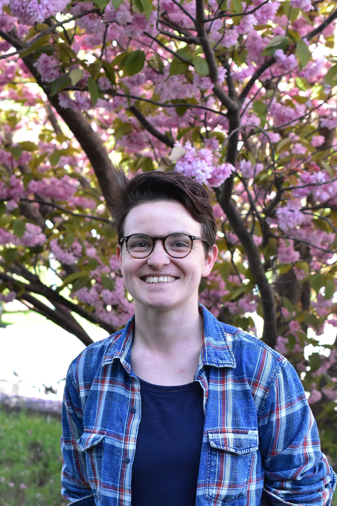
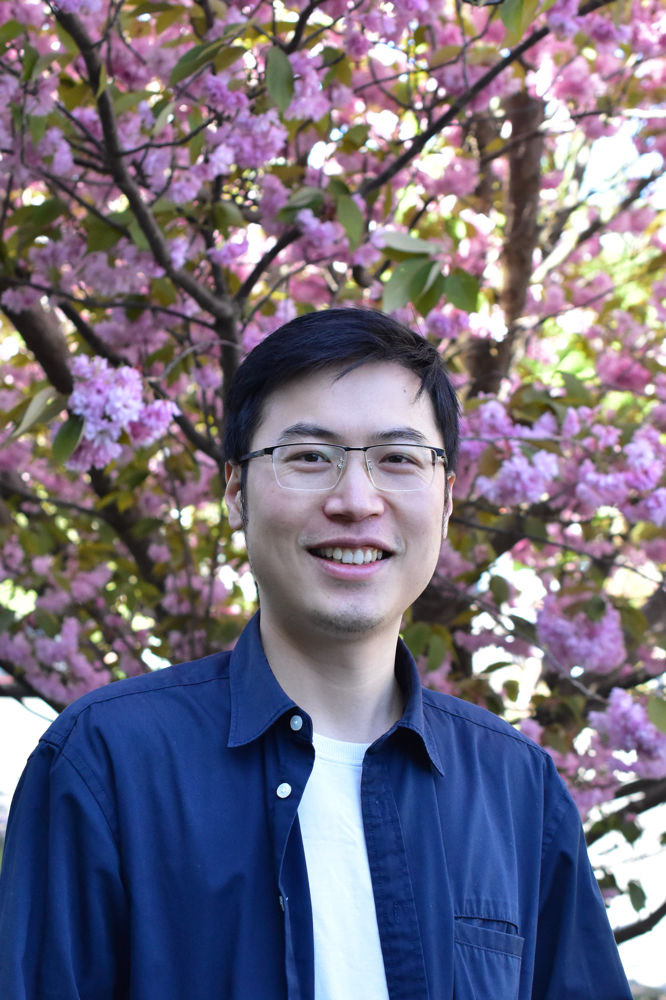
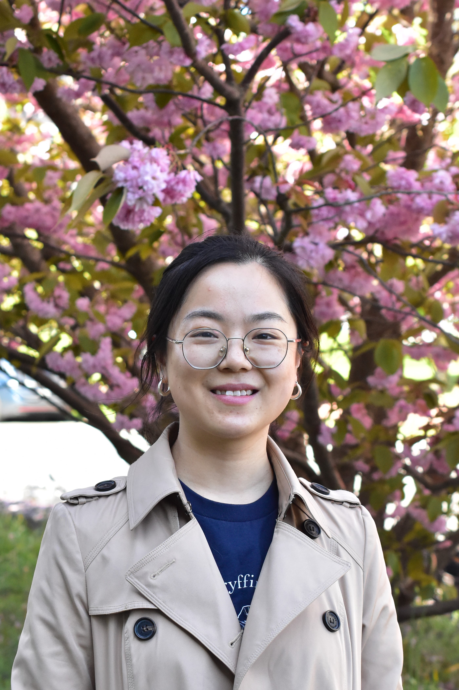
Yan Zheng, MSc
Doktorandin
✉️ E-Mail an Yan
Silja Kreibohm, MD
Assistenzärztin
✉️ E-Mail an Silja
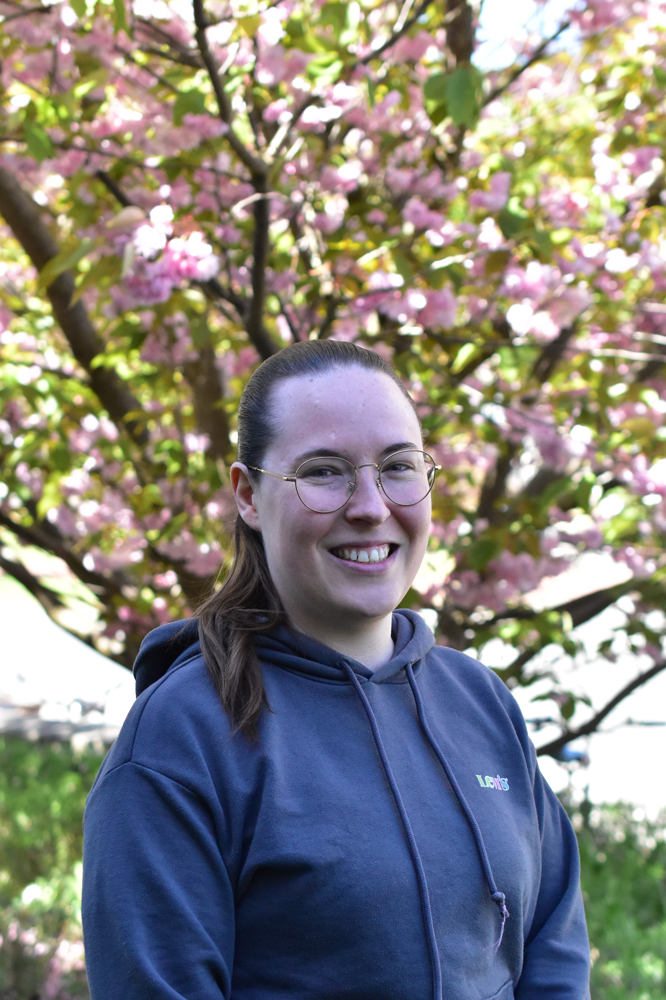
Sophia Kieferle, MSc
Doktorandin
✉️ E-Mail an Sophia
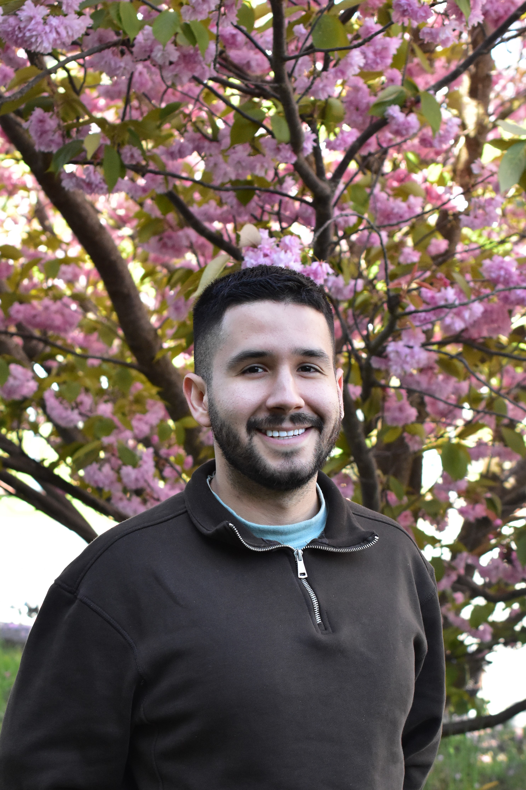
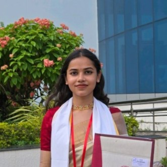
Ehemalige Mitglieder
Über die Jahre hat unser Labor vom Engagement und der Kreativität vieler Studierender und Forschender profitiert. Wir sind stolz auf ihre Erfolge und dankbar für ihren nachhaltigen Beitrag zu unserer Gruppe.
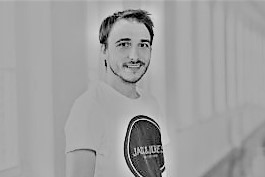
Dr. Patrick Fischer
Ehemaliger Doktorand (Universität Würzburg)
Prof. Bhupesh Prusty
Ehemaliger Postdoc (Universität Würzburg)
Heute: Gruppenleiter, Universität Riga
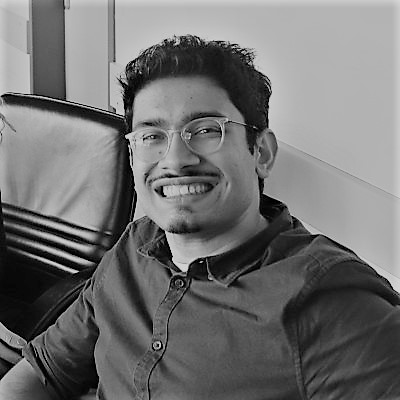
Dr. Manivel Lodha
Ehemaliger Doktorand (Universität Würzburg)
Heute: Postdoc, Rockefeller University
Dr. Lara Djakovic
Ehemalige Doktorandin (Universität Würzburg)
Heute: Industrie – Boehringer Ingelheim
Dr. Marisa Baptista
Ehemalige Postdoc (Universität Würzburg)
Dr. Andrzej Rutkowski
Ehemaliger Postdoc (University of Cambridge)
Heute: Industrie – Medicines Discovery Catapult (MDC)
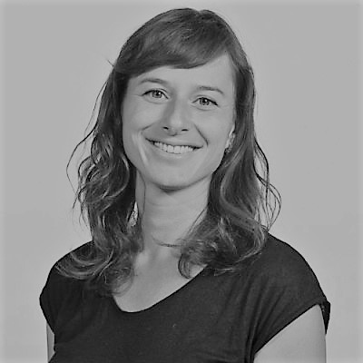
Prof. Miranda de Graaf
Ehemalige wissenschaftliche Mitarbeiterin (University of Cambridge)
Heute: Associate Professor/Gruppenleiterin, Erasmus MC
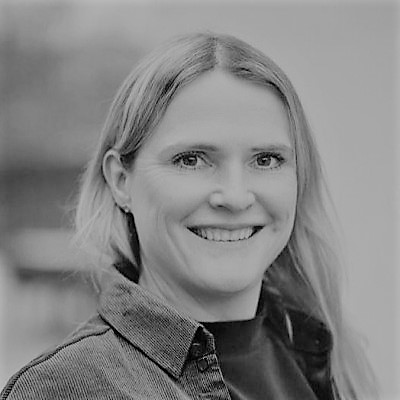
Dr. Lisa Marcinowski
Ehemalige Doktorandin (LMU München)
Heute: Industrie – Sandoz Biopharmaceuticals
Dr. Sheila Jedlicka
Ehemalige Mitarbeiterin (LMU München)
Heute: Fachärztin – Neurochirurgie, München Klinik
Bernd Rädle
Ehemaliger Technischer Assistent (LMU München)